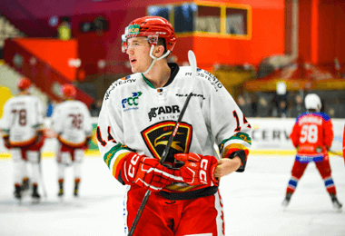
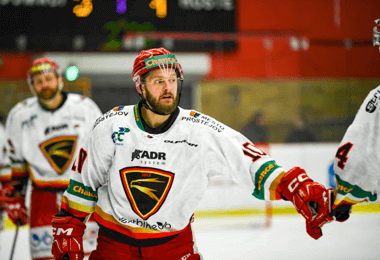

ASPV na soutěži ve Zruči
11. března pořádala Plzeňská krajská asociace – Sport pro všechny ve Zruči soutěž pro mladší děti a předškoláky. Soutěže se zúčastnili i naši malí svěřenci TJ SOKOL VEJPRNICE, se kterými se pravidelně...
Číst víceDukla začala utkání velmi aktivní hrou, kterou po pár minutách hry poprvé zužitkovala. V sedmé minutě Špatenka rychle rozehrál volný kop z poloviny hřiště na Moulise, který ve vápně posunul na Barace. Krajní hráč adresoval zpětnou přihrávku přesně do středu vápna, kde stál připravený David Kozel, jehož střela zapadla ke vzdálenější tyči Dvořáka.
O čtyři minuty později podržel domácí fotbalisty skvělým zákrokem Filip Rada. Hostující Daniel Šmiga si naskočil na povedený centr svého spoluhráče, ale devětatřicetiletého brankáře Radu nepřekonal. Podruhé se tak ke slovu dostali domácí.
V jednadvacáté minutě nasměroval tým z Julisky centr do vápna, který vypadl z náruče sešívaného brankáře. V následném zmatku před brankou se nejlépe zorientoval Daniel Krch, který si připsal svojí první branku v žlutočervených barvách a zvýšil na 2:0.
V gólově bohatém prvním poločase se přesného zásahu po více než půl hodině hry dočkali také sešívaní. Z protiútoku Slavie, po několika odrazech na úrovni vápna, propadl míč k osamocenému Adamu Pudilovi. Mladý slávistický záložník tváři v tvář proti Radovi uspěl.
Druhý poločas nabídl množství osobních soubojů na obou stranách, i přesto se Dukla v 66. minutě vrátila do dvoubrankového vedení. Po několika vyložených šancích vyslal Moulis z pravé strany Lukáše Matějku, který vystřelil z velkého úhlu. Razantní střelou se mu ale podařilo prostřelit hostujícího golmana.
Další utkání nás čeká 1. dubna, kdy se představíme na hřišti Vyškova. Plánovaný start je v 10:15.
V jednadvacáté minutě nasměroval tým z Julisky centr do vápna, který vypadl z náruče sešívaného brankáře. V následném zmatku před brankou se nejlépe zorientoval Daniel Krch, který si připsal svojí první branku v žlutočervených barvách a zvýšil na 2:0.
V gólově bohatém prvním poločase se přesného zásahu po více než půl hodině hry dočkali také sešívaní. Z protiútoku Slavie, po několika odrazech na úrovni vápna, propadl míč k osamocenému Adamu Pudilovi. Mladý slávistický záložník tváři v tvář proti Radovi uspěl. V gólově bohatém prvním poločase se přesného zásahu po více než půl hodině hry dočkali také sešívaní. Z protiútoku Slavie, po několika odrazech na úrovni vápna, propadl míč k osamocenému Adamu Pudilovi. Mladý slávistický záložník tváři v tvář proti Radovi uspěl.
Druhý poločas nabídl množství osobních soubojů na obou stranách, i přesto se Dukla v 66. minutě vrátila do dvoubrankového vedení. Po několika vyložených šancích vyslal Moulis z pravé strany Lukáše Matějku, který vystřelil z velkého úhlu. Razantní střelou se mu ale podařilo prostřelit hostujícího golmana.
| Firma | Jméno a příjmení | Datum a čas | Datum a čas | |
|---|---|---|---|---|
| Eluvia Service | Denis Heldák | 24. 09. 2023, 14:01 | Listopad | jakub.pospisil@seznam.cz |
| Eluvia Service | Denis Heldák | 24. 09. 2023, 14:01 | Listopad | jakub.pospisil@seznam.cz |
| Eluvia Service | Denis Heldák | 24. 09. 2023, 14:01 | Listopad | jakub.pospisil@seznam.cz |
| Eluvia Service | Denis Heldák | 24. 09. 2023, 14:01 | Listopad | jakub.pospisil@seznam.cz |
| Eluvia Service | Denis Heldák | 24. 09. 2023, 14:01 | Listopad | jakub.pospisil@seznam.cz |
11. března pořádala Plzeňská krajská asociace – Sport pro všechny ve Zruči soutěž pro mladší děti a předškoláky. Soutěže se zúčastnili i naši malí svěřenci TJ SOKOL VEJPRNICE, se kterými se pravidelně...
Číst více11. března pořádala Plzeňská krajská asociace – Sport pro všechny ve Zruči soutěž pro mladší děti a předškoláky. Soutěže se zúčastnili i naši malí svěřenci TJ SOKOL VEJPRNICE, se kterými se pravidelně...
Číst více11. března pořádala Plzeňská krajská asociace – Sport pro všechny ve Zruči soutěž pro mladší děti a předškoláky. Soutěže se zúčastnili i naši malí svěřenci TJ SOKOL VEJPRNICE, se kterými se pravidelně...
Číst více